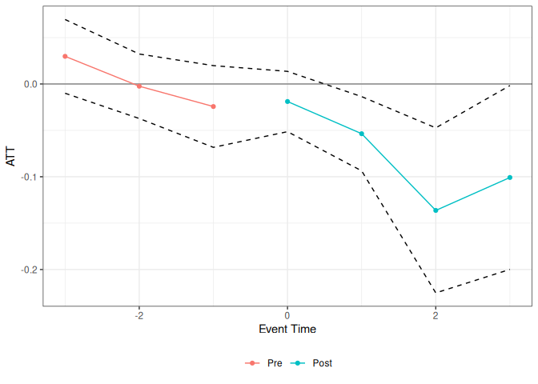
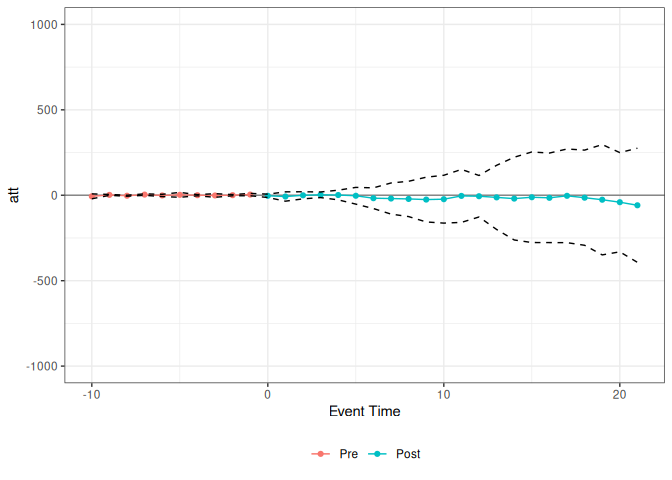
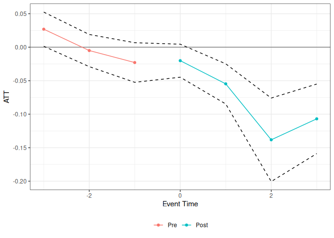

Structure of panel data causal inference problems
The ptetools package compartmentalizes the steps needed to implement estimators of group-time average treatment effects (and their aggregations) in order to make it easier to apply the same sorts of arguments outside of their “birthplace” in the literature on difference-in-differences.
Essentially, the idea is that many panel data causal inference problems involve steps such as:
Defining an identification strategy (e.g., difference-in-differences)
Defining a notion of a group (e.g., based on treatment timing)
Looping over groups and time periods
Organizing the data so that the correct data show up for each group and time period
Computing group-time average treatment effects (or other parameters that are local to a group and a time period)
Aggregating group-time average treatment effect parameters (e.g., into an event study or an overall average treatment effect parameter)
Many of these steps are common across different panel data causal inference settings. For example, you could implement a difference-in-differences identification strategy or a change-in-changes identification strategy with all of the same steps as above except for replacing step 1.
The idea of the ptetools package is to re-use as much code/infrastructure as possible when developing new approaches to panel data causal inference. For example, ptetools sits as the “backend” for several other packages including: ife, contdid, and parts of qte.
How ptetools works
The main function is called pte. The most important parameters that it takes in are subset_fun and attgt_fun. These are functions that the user should pass to pte.
subset_fun takes in the overall data, a group, a time period, and possibly other arguments and returns a data.frame containing the relevant subset of the data, an outcome, and whether or not a unit should be considered to be in the treated or comparison group for that group/time. There is one example of a relevant subset function provided in the package: the two_by_two_subset function. This function takes an original dataset, subsets it into pre- and post-treatment periods and denotes treated and untreated units. This particular subset is perhaps the most common/important one for thinking about treatment effects with panel data, and this function can be reused across applications.
The other main function is attgt_fun. This function should be able to take in the correct subset of data, possibly along with other arguments to the function, and report an ATT for that subset. With minor modification, this function should be available for most any sort of treatment effects application — for example, if you can solve the baseline 2x2 case in difference in differences, you should use that function here, and the ptetools package will take care of dealing with the variation in treatment timing.
If attgt_fun returns an influence function, then the ptetools package will also conduct inference using the multiplier bootstrap (which is fast) and produce uniform confidence bands (which adjust for multiple testing).
The default output of pte is an overall treatment effect on the treated (i.e., across all groups that participate in the treatment in any time period) and and event study. More aggregations are possible, but these seem to be the leading cases; aggregations of group-time average treatment effects are discussed at length in Callaway and Sant’Anna (2021).
Below are several examples of how the ptetools package can be used to implement an identification strategy with a very small amount of new code.
Example 1: Difference in differences
The did package, which is based on Callaway and Sant’Anna (2021), includes estimates of group-time average treatment effects, ATT(g,t), based on a difference in differences identification strategy. The following example demonstrates that it is easy to compute group-time average treatment effects using difference in differences using the ptetools package. [Note: This is definitely not the recommended way of doing this as there is very little error handling, etc. here, but it is rather a proof of concept. You should use the did package for this case.]
This example reproduces DID estimates of the effect of the minimum wage on employment using data from the did package.
library(did)
data(mpdta)
did_res <- pte(
yname = "lemp",
gname = "first.treat",
tname = "year",
idname = "countyreal",
data = mpdta,
setup_pte_fun = setup_pte,
subset_fun = two_by_two_subset,
attgt_fun = did_attgt,
xformla = ~lpop
)
summary(did_res)
#>
#> Overall ATT:
#> ATT Std. Error [ 95% Conf. Int.]
#> -0.0305 0.0179 -0.0655 0.0046
#>
#>
#> Dynamic Effects:
#> Event Time Estimate Std. Error [95% Simult. Conf. Band]
#> -3 0.0298 0.0144 -0.0067 0.0662
#> -2 -0.0024 0.0145 -0.0391 0.0342
#> -1 -0.0243 0.0142 -0.0601 0.0116
#> 0 -0.0189 0.0108 -0.0463 0.0084
#> 1 -0.0536 0.0169 -0.0963 -0.0109 *
#> 2 -0.1363 0.0330 -0.2196 -0.0530 *
#> 3 -0.1008 0.0363 -0.1925 -0.0091 *
#> ---
#> Signif. codes: `*' confidence band does not cover 0
ggplot2::autoplot(did_res)
What’s most interesting here, is that the only “new” code that needs to be written is in the did_attgt function. You will see that this is a very small amount of code.
Example 2: Policy Evaluation during a Pandemic
As a next example, consider trying to estimate effects of COVID-19 related policies during a pandemic. The estimates below are for the effects of state-level shelter-in-place orders during the early part of the pandemic.
The data for this example is included in the ptetools package:
data(covid_data)Callaway and Li (2021) argue that a particular unconfoundedness-type strategy is more appropriate in this context than DID-type strategies due to the spread of COVID-19 cases being highly nonlinear. However, they still deal with the challenge of variation in treatment timing. Therefore, it is still useful to think about group-time average treatment effects, but the DID strategy should be replaced with their particular unconfoundedness type assumption.
The ptetools package handles this through pte_default with lagged_outcome_cov = TRUE.
# formula for covariates
xformla <- ~ current + I(current^2) + region + totalTestResults
covid_res <- pte_default(
yname = "positive",
gname = "group",
tname = "time.period",
idname = "state_id",
data = covid_data2,
xformula = xformla,
d_outcome = FALSE,
lagged_outcome_cov = TRUE,
max_e = 21,
min_e = -10
)
summary(covid_res)
#>
#> Overall ATT:
#> ATT Std. Error [ 95% Conf. Int.]
#> -13.2547 68.2125 -146.9487 120.4393
#>
#>
#> Dynamic Effects:
#> Event Time Estimate Std. Error [95% Simult. Conf. Band]
#> -10 -6.3170 5.8206 -20.7487 8.1148
#> -9 2.1087 1.0787 -0.5659 4.7834
#> -8 -2.7721 1.1642 -5.6587 0.1144
#> -7 3.8965 1.7664 -0.4831 8.2761
#> -6 -1.0588 2.6137 -7.5393 5.4217
#> -5 2.4337 5.7723 -11.8782 16.7456
#> -4 0.2436 1.3876 -3.1970 3.6841
#> -3 -1.3052 4.3062 -11.9821 9.3717
#> -2 0.4594 1.3834 -2.9705 3.8894
#> -1 4.0376 2.7897 -2.8794 10.9545
#> 0 -3.2518 3.9590 -13.0678 6.5643
#> 1 -7.4231 10.9962 -34.6873 19.8411
#> 2 -0.3148 8.3794 -21.0910 20.4613
#> 3 2.7880 6.6221 -13.6309 19.2070
#> 4 1.3625 11.4217 -26.9568 29.6818
#> 5 -2.9563 19.7428 -51.9074 45.9947
#> 6 -17.2610 24.4538 -77.8925 43.3705
#> 7 -19.2258 36.7338 -110.3048 71.8531
#> 8 -21.5150 41.6608 -124.8102 81.7803
#> 9 -25.2793 52.8104 -156.2191 105.6605
#> 10 -23.0541 56.4574 -163.0364 116.9282
#> 11 -3.8346 62.5346 -158.8848 151.2156
#> 12 -5.6789 48.9659 -127.0865 115.7287
#> 13 -12.4977 75.7291 -200.2630 175.2675
#> 14 -19.6199 97.6364 -261.7026 222.4629
#> 15 -11.6638 106.8833 -276.6738 253.3462
#> 16 -15.0522 105.6627 -277.0357 246.9313
#> 17 -3.3234 110.5480 -277.4196 270.7728
#> 18 -14.3328 112.3203 -292.8233 264.1577
#> 19 -26.1852 130.2347 -349.0934 296.7230
#> 20 -40.7039 117.1056 -331.0591 249.6514
#> 21 -58.7364 134.7157 -392.7549 275.2821
#> ---
#> Signif. codes: `*' confidence band does not cover 0
ggplot2::autoplot(covid_res) + ylim(c(-1000, 1000))
What’s most interesting is just how little code needs to be written here. The pte_default function handles the unconfoundedness-type identification strategy directly, with no custom attgt_fun required.
Example 3: Empirical Bootstrap
The code above used the multiplier bootstrap. The great thing about the multiplier bootstrap is that it’s fast. But in order to use it, you have to work out the influence function for the estimator of ATT(g,t). Although I pretty much always end up doing this, it can be tedious, and it can be nice to get a working version of the code for a project going before working out the details on the influence function.
The ptetools package can be used with the empirical bootstrap. There are a few limitations. First, it’s going to be substantially slower. Second, this code just reports pointwise confidence intervals. However, this basically is set up to fit into my typical workflow, and I see this as a way to get preliminary results.
Let’s demonstrate it. To do this, consider the same setup as in Example 1, but where no influence function is returned. Let’s write the code for this:
# did with no influence function
did_attgt_noif <- function(gt_data, xformla, ...) {
# call original function
did_gt <- did_attgt(gt_data, xformla, ...)
# remove influence function
did_gt$inf_func <- NULL
did_gt
}Now, we can show the same sorts of results as above
did_res_noif <- pte(
yname = "lemp",
gname = "first.treat",
tname = "year",
idname = "countyreal",
data = mpdta,
setup_pte_fun = setup_pte,
subset_fun = two_by_two_subset,
attgt_fun = did_attgt_noif, # this is only diff.
xformla = ~lpop
)
summary(did_res_noif)
#>
#> Overall ATT:
#> ATT Std. Error [ 95% Conf. Int.]
#> -0.0323 0.0127 -0.0557 -0.0088 *
#>
#>
#> Dynamic Effects:
#> Event Time Estimate Std. Error [95% Simult. Conf. Band]
#> -3 0.0269 0.0130 0.0014 0.0524 *
#> -2 -0.0050 0.0122 -0.0290 0.0190
#> -1 -0.0229 0.0151 -0.0524 0.0067
#> 0 -0.0201 0.0126 -0.0448 0.0045
#> 1 -0.0547 0.0153 -0.0847 -0.0248 *
#> 2 -0.1382 0.0318 -0.2005 -0.0759 *
#> 3 -0.1069 0.0265 -0.1588 -0.0550 *
#> ---
#> Signif. codes: `*' confidence band does not cover 0
ggplot2::autoplot(did_res_noif)
What’s exciting about this is just how little new code needs to be written.